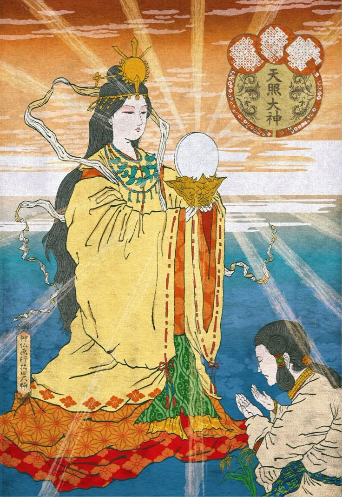

Ёкаи
Ёкаи — это сверхъестественные существа японской мифологии. Они могут принимать различные формы и часто связаны с природными явлениями.

Аматерасу
Аматерасу — богиня солнца и верховное божество синтоизма. Она олицетворяет свет, жизнь и плодородие.

Сусаноо
Сусаноо — бог штормов и морей. Он известен своей буйной натурой и легендарной битвой с восьмиглавым драконом Ямата-но-Орохи.

Цукуёми
Цукуёми — бог луны. Он является братом Аматерасу и воплощает спокойствие и мудрость.
Кицунэ
Кицунэ — мифические лисы, обладающие магическими способностями. Они могут превращаться в людей и обманывать их.